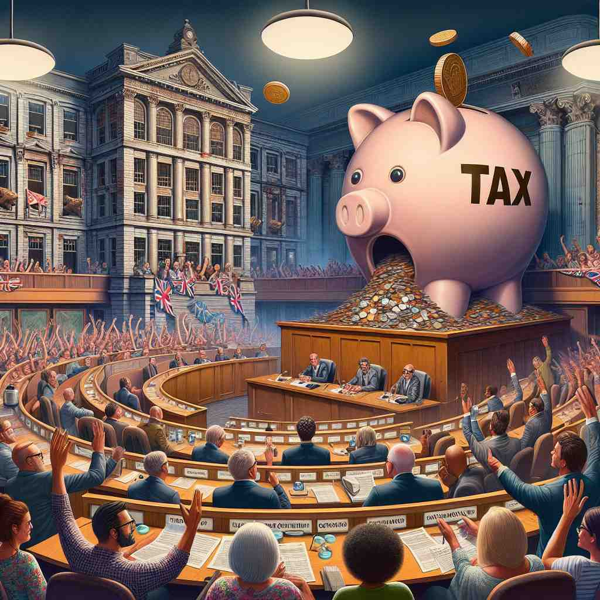

💬 You need to pay your tax before the deadline.

💬 The sales tax added to the grocery bill surprised the customers.

💬 People are here to pay a tax for public services.
💬 Many people file taxes every year to report their income.
🔈 [tæks]
🗝️ n. a compulsory financial charge imposed by a government
🖼️ 想象一个家庭的用餐场景。父母和孩子们聚在一起讨论预算问题。父亲说：'因为政府最近提高了税率，我们需要更加注意我们的开支。'这个场景展示了税（tax）作为政府征收的强制性财务费用的含义。
🔍 理解'tax'的关键在于把它想象成一种'强制性的抽取'。政府征税是从人们的收入中抽取一部分；当我们说某事'taxed our strength'时，就是在比喻它从我们的体力中'抽取'了很多。这种'抽取'的概念贯穿了'tax'的各种用法，无论是字面意义还是比喻含义。
💬 You need to pay your tax before the deadline.
💬 The sales tax added to the grocery bill surprised the customers.
💬 People are here to pay a tax for public services.
💬 Many people file taxes every year to report their income.
🌳 单词 "tax" 来源于拉丁语 "taxare"，意为 '评估、征税'。
💡 可以将 "tax" 想象成 'task' 加上对社会的 'X' 责任，意为一种需要对公共事务履行的任务，即纳税。
🗝️ v. to impose a tax on
🖼️ 在一个市政府会议上，官员们正在讨论财务政策。其中一位官员提议：'我们需要对某些奢侈品品类征税，以增加政府收入。'这个场景展示了对某物征税的动作。
💬 The government plans to tax sugary drinks.
❓ 将名词转化为动词，表示征收税款的行为
🗝️ v. to make heavy demands on
🖼️ 在一个繁忙的办公室里，经理给员工们布置了一些繁重的任务。一位员工抱怨道：'最近的项目真是让我们喘不过气来，真是太 taxing 了。'这个场景展示了 'tax' 表示对某人提出严苛要求的含义。
💬 The long hike taxed our strength.
❓ 比喻用法，像征税一样消耗或使用某物
🗝️ v. to accuse or charge
🖼️ 在一间法庭上，律师正在听取证人陈述。突然，检察官起身对被告说道：'我们正式指控你犯有盗窃罪。'这个场景展现了 'tax' 作为控告或指控的含义。
💬 He was taxed with negligence in his duties.
❓ 源自古义"评估"，引申为对某人提出指控
🗝️ n. a strain or heavy demand
🖼️ 想象一个运动员正在进行艰苦的训练。教练鼓励道：'我知道这对你的身体是一种巨大的负担（tax），但结果会是值得的。'这个场景展示了 'tax' 作为一种压力或负担的含义。
💬 The project was a considerable tax on our resources.
❓ 从动词比喻义转回名词，表示负担或压力